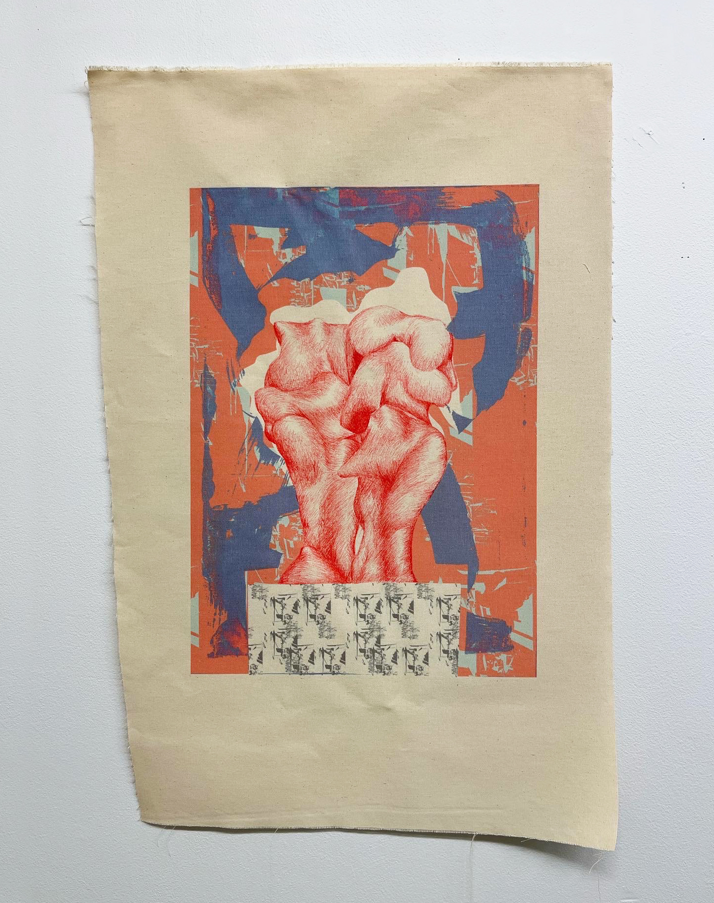

WORKS ON FABRIC
This is my current and in progress body of work made during the first year of my MFA program at the School of the Art Institute of Chicago.

Checkered Tiger Flat
2023. Sewn screenprinted and hand dyed canvas, linen, hemp, and cotton on stretcher bars. 35"W x 60"H.

Untitled (Quilted Planes of Distortion)
2023. Sewn screenprinted and hand dyed canvas and muslin on stretcher bars. 34"W x 56"H.

Thumbs Up
2022. Screenprinted nylon, fan. 5'h.

Red Lumps
2022. Pen on dye heat pressed canvas. 16 x 24".